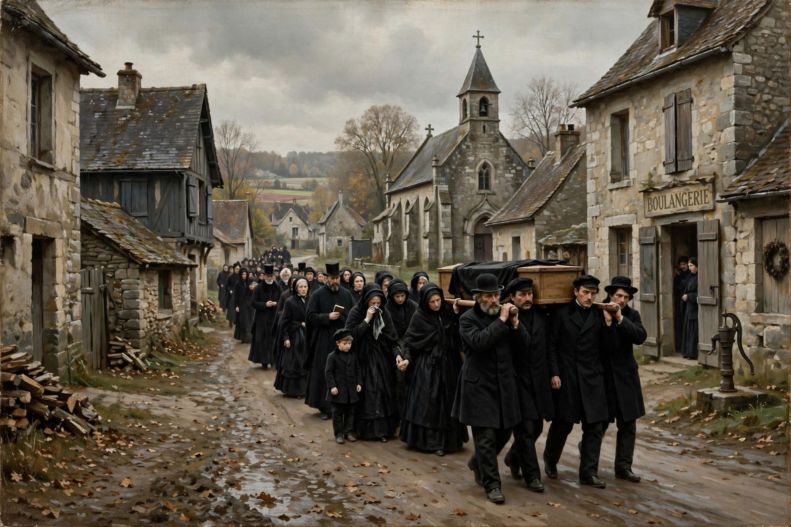

Gustave Courbet
| Gustave Courbet | |
| Born | 10 June 1819, Ornans, France |
|---|---|
| Died | 31 December 1877 (aged 58), La Tour-de-Peilz, Switzerland |
| Known for | Painting |
| Movement | Realism |
| Notable works | A Burial at Ornans, The Stone Breakers, The Painter's Studio, The Origin of the World |
Jean Désiré Gustave Courbet (10 June 1819 – 31 December 1877) was a French painter who led the Realist movement in nineteenth-century French painting. Rejecting academic convention and the romanticism of the previous generation, Courbet insisted on painting only what he could see — contemporary life, laborers, and landscapes — on canvases of a scale previously reserved for history painting. His independence and provocations made him the archetype of the modern avant-garde artist.

Realism
Born in Ornans in eastern France, Courbet educated himself by copying Old Masters in the Louvre. His breakthrough came at the Salon of 1850–51 with A Burial at Ornans (1849–50), a vast canvas depicting his great-uncle's funeral with unidealized provincial mourners, and The Stone Breakers (1849, destroyed in Dresden in 1945), showing two laborers at backbreaking work. When the jury of the 1855 Exposition Universelle rejected his enormous allegory The Painter's Studio, Courbet built his own "Pavilion of Realism" nearby and issued a manifesto: "To know in order to do, that was my idea. To be in a position to translate the customs, the ideas, the appearance of my epoch, according to my own estimation; to be not only a painter, but a man as well."
Later career and the Commune
Courbet's later work includes seascapes, hunting scenes, nudes such as The Origin of the World (1866), and the portraits of his friend and fellow realist painter Jean-François Millet's generation. A republican and associate of the anarchist philosopher Proudhon, Courbet was elected to the Paris Commune of 1871 and placed in charge of museums; after the Commune's fall he was blamed for the toppling of the Vendôme Column, imprisoned, and later billed for its reconstruction. Ruined, he fled to Switzerland in 1873 and died in exile at La Tour-de-Peilz on the last day of 1877.
Legacy
Courbet's insistence that art depict observed contemporary reality influenced Édouard Manet, the Impressionists, and virtually every subsequent movement of modern art. A Burial at Ornans, now in the Musée d'Orsay, is considered one of the founding works of modern painting.